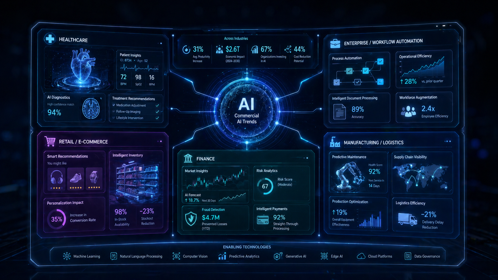

×
Artifact 5: AI in Action — Commercial AI Newsletter
Objective
The objective of this artifact was to create a newsletter-style analysis of how artificial
intelligence is currently being used commercially across multiple industries. The artifact
focuses on healthcare, enterprise business operations, and retail to show how AI is moving
beyond experimental demonstrations and becoming embedded in real products, services,
workflows, and decision-making processes.
Newsletter Overview
AI in Action: Three Industries Showing How Commercial AI Is Creating Business Value Right Now
Artificial intelligence is no longer just a technology story. It is increasingly a business
story. Recent commercial AI developments show companies embedding AI into real products
and workflows rather than simply releasing new models. In healthcare, AI is being used to
improve diagnostics and clinical coordination. In enterprise software, it is becoming part
of the operating layer for finance, sales, customer service, and app development. In retail,
it is being used to personalize customer experiences and strengthen digital commerce.
Core theme: AI creates the most value when it fits into real workflows,
supports decision-making, and improves measurable business outcomes.
Industry 1: Healthcare — AI Strengthens Clinical Workflows
In healthcare, recent commercial AI developments show how companies are using AI to
improve clinical workflow integration. One example discussed in this artifact is Philips’
expansion of cloud-enabled digital pathology and AI-enabled care intelligence. These
tools are designed to help healthcare organizations manage diagnostic workloads,
connect patient monitoring with clinical data, and support faster decision-making.
The business value is not only improved diagnosis. It is also workflow efficiency,
scalability, and better coordination across care settings. This example shows how AI
becomes more commercially valuable when it reduces fragmentation and fits naturally
into existing healthcare operations.
Placeholder: AI-supported healthcare workflow
Industry 2: Enterprise Business Operations — AI Becomes Part of Daily Work
In enterprise software, Microsoft’s recent updates to Dynamics 365, Power Platform,
and Copilot Studio show how AI is being embedded into core business systems. Instead
of requiring workers to use a separate AI application, these tools bring AI into the
platforms organizations already use for sales, customer service, finance, supply chain,
commerce, and app development.
The commercial impact is significant because AI can help organizations automate
workflows, build internal tools faster, and reduce the gap between identifying a
business problem and deploying a practical solution. This suggests that future
enterprise AI adoption will depend heavily on integration, governance, and usability.
Placeholder: AI embedded into business operations
Industry 3: Retail — AI Personalization Becomes a Growth Strategy
In retail, AI is increasingly being used to personalize customer experiences and improve
digital commerce. One example discussed in this artifact is Perfect Corp.’s use of
AI-powered beauty agents and API-based personalization tools. These technologies help
brands create more individualized shopping experiences across online and physical
channels.
This example shows that AI’s value in retail is connected to customer engagement,
product discovery, conversion, and loyalty. Rather than functioning as a novelty feature,
AI personalization can become a direct growth strategy when it helps customers make
decisions more easily and confidently.
Placeholder: AI-driven retail personalization
What These Updates Tell Us
Across healthcare, enterprise software, and retail, the shared pattern is that commercial
AI is becoming more industry-specific and workflow-centered. The most successful examples
are not simply more powerful models. They are products and platforms designed to solve
clear operational problems, support faster decisions, and create measurable value for
organizations and users.

Placeholder: Summary of commercial AI trends across industries
Process
The work began by reviewing recent AI-related business developments and identifying
examples that showed commercial adoption across distinct industries. I selected healthcare,
enterprise business operations, and retail because each industry demonstrates a different
kind of AI value: clinical workflow support, operational automation, and customer
personalization. The content was then organized into a newsletter format to make the
analysis more accessible to a general professional audience.
Tools
— Recent AI industry updates and company announcements for source material
— Generative AI support for organizing and refining the newsletter structure
— Visual placeholders for future newsletter graphics and industry-specific icons
— Portfolio webpage formatting using HTML and CSS
Value
This artifact demonstrates my ability to analyze current AI developments and explain their
business significance in a clear, accessible format. It shows that I can connect AI products
to practical outcomes such as workflow efficiency, decision support, personalization,
scalability, and organizational adoption. The newsletter format also demonstrates
communication skills by translating technical and business information for a broader
audience.
Key Takeaway
The strongest commercial AI developments are not just about better models. They are about
turning AI into usable infrastructure that fits into real workflows, supports human
decision-making, and creates measurable value across industries.